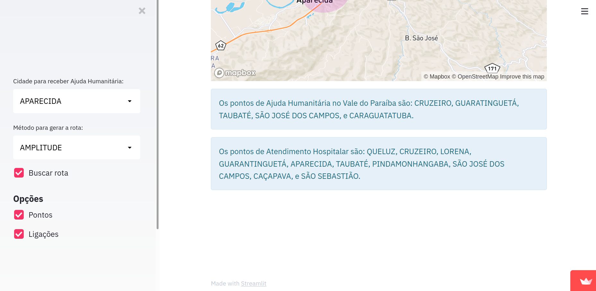

Rotas Cidades
O Rotas é um programa de Inteligência Artificial baseado na problemática do caixeiro viajante.
O caixeiro viajante é o indivíduo que deve percorrer todo o conjunto de cidades e voltar ao ponto de partida sem repetir a cidade.No caso do programa, o algoritmo recebe uma cidade destino que é umlugar que sofreu algum desastre e precisa de Ajuda Humanitŕaria. Dentre as cidades com pontos de Ajuda Humanitária mais próxima, o programa gera a melhor rota considerando a quantidade de saltos (número de cidades), ou considerando a distância, entre outras formas, a escolha do que considerar fica a critério do usuário.
Da mesma forma, após chegar ao local que precisa da ajuda, o programa gera a rota que leva até a cidade que possui um ponto de atendimento hospitalar para esses cenários. Dessa forma o programa é multi objetivo.
Para fins de validação do algoritmo, o projeto implementa sobre uma área real que é o Vale do Paraíba, São Paulo-Brasil. Inclui 39 cidades.
Tecnologias usadas: Python e Streamlit.
código

